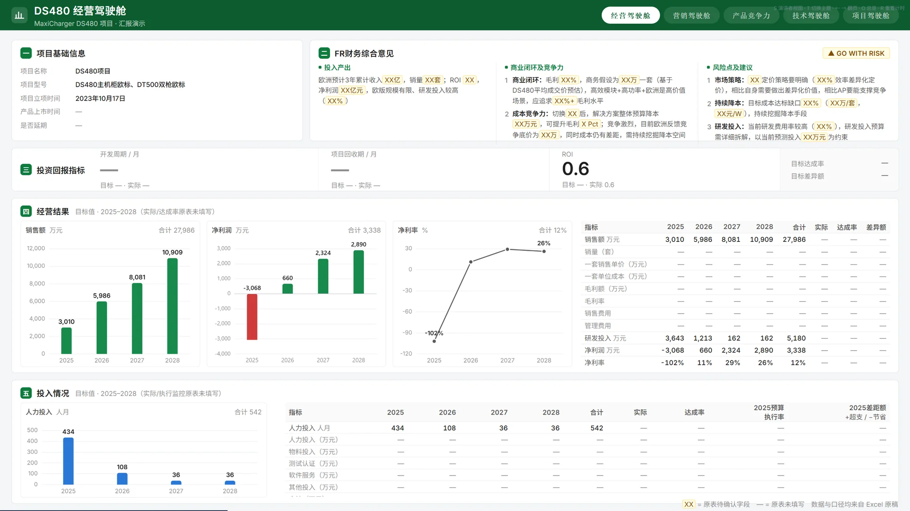
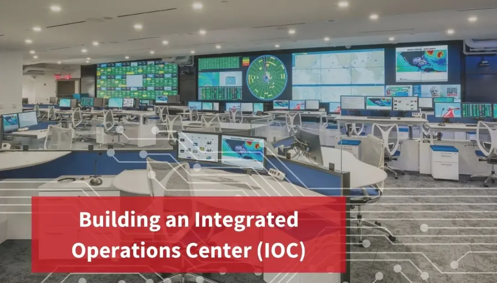

引言 · 概念

面向管理层的一站式决策支持系统：像飞机驾驶舱把仪表集中到一屏，让高层一屏看清全局、快速做出决策。
1998 年 SAP 提出，思想前身是 1980 年代的高管信息系统（EIS）。
KPI 集中可视化 · 实时经营监控 · 风险预警 · 高层协同决策。

集成大数据、AI 的运营指挥中枢，把分散的系统聚成一体，让组织看得见全域、调得动资源，被称为城市/园区/企业的大脑。
IBM 2011 年发布（源自其"智慧地球 / 智慧城市"战略），后由华为、阿里等厂商延伸到园区与企业场景。
全域态势感知 · 监测预警 · 应急指挥调度 · 跨部门运营协同。